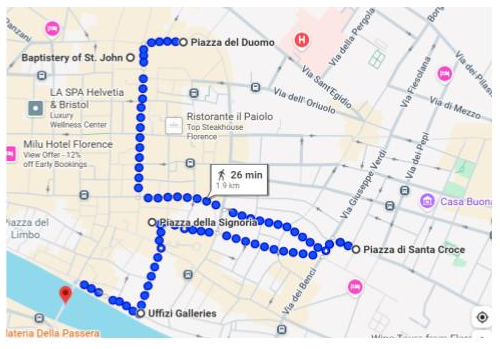

Hotel:
Esperanza (Via dell'Inferno 3, Santa Maria Novella, 50123 Florence, Italy)
Cerca de la estación Firenze Santa Maria Novella
Ver si ir a: Pisa
Paseos:
El acceso al interior del Duomo es gratuito, pero suele haber filas largas por el cupo limitado. Recomendación: llegar temprano (abre a las 9 AM) o al final del día.
